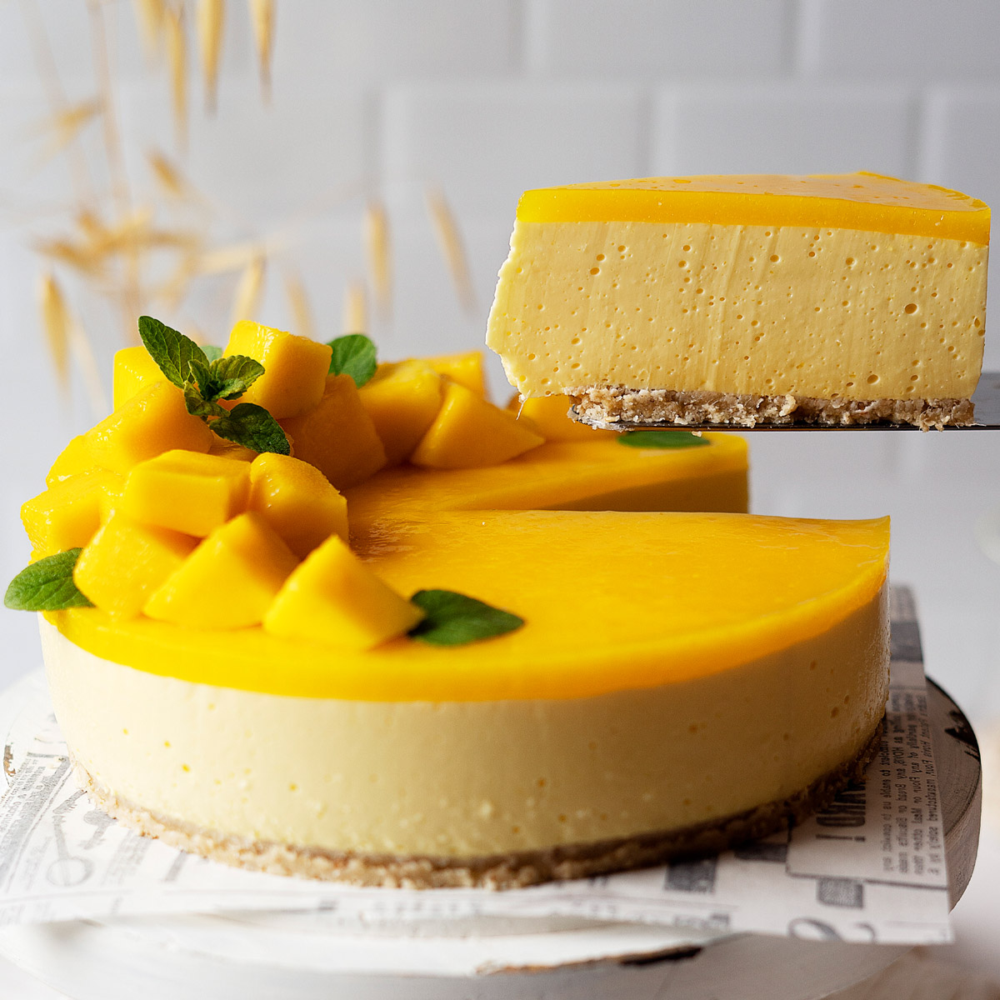

Mango New York Cheesecake
The perfect creamy, tart cheesecake.
Servings: 8 to 10
Prep time: 30 minutes
Cook time:: 2 hours
Decorating Time:: 30 minutes
Total Time:: 3 hours

Ingredients
CRUST
FILLING
TOPPING
EQUIPMENT
- Stand mixer or hand mixer
- Blender or food processor
- Deep roasting pan
- 9-inch springform pan
- 18-inch heavy-duty aluminum foil
Instructions
SET UP
- Follow the set up instructions for the Perfect Cheesecake Crust
- Start boiling a kettle of water.
THE CRUST
- Make the Perfect Cheesecake Crust
THE FILLING
- For a stand mixer, use the paddle attachment. Beat together room-temperature cream cheese, sugar, and flour for about 1 minute. Scrape the bottom and sides of the bowl as necessary.
- Peel and slice 2 mangos. Puree the mangos in the blender or food processor until smooth.
- Add the vanilla, mango puree, and salt into the bowl and mix on low until combined.
- Crack the eggs into a separate bowl. Add the eggs one at a time while mixing on low until each one is incorporated
- Mix in the sour cream and mix until the batter is uniform. Stop mixing immediately when the batter becomes uniform, making sure not to over-mix.
BAKING
- Transfer the filling to the springform pan and place the pan into the roasting tray.
- Fill the tray with hot water up to above an inch along the side of the pan.
- Bake the cake for about 1 hour 45 minutes to 2 hours until the cake is set. You will know that the cake is set when it jiggles together rather than rippling.
- Remove the cheesecake from the oven and let cook in the water bath for 45 minutes.
- Remove the cheesecake from the springform pan, using a thin knife along the sides if needed.
- Let cool in the fridge for 8 hours or overnight.
THE TOPPINGS
- Slice and peel the remaining mangos and puree with the sugar and water.
- Pour the puree over the cooled cheesecake, using a spatula to smooth along the top.
- Any remaining mango can be placed as whole fruit on the top. Optionally, a simple whipped frosting can be used to decorate the edges.
- Chill for an additional 30 minutes for the puree to set.
Serve and Enjoy!